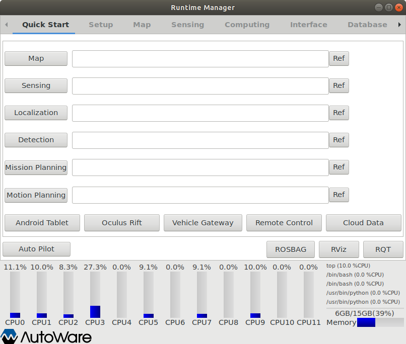
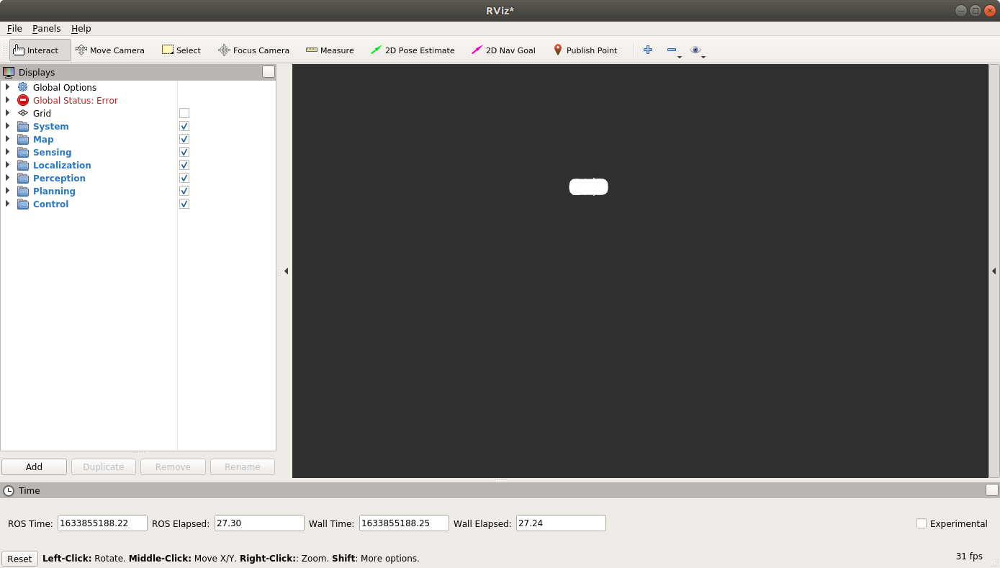
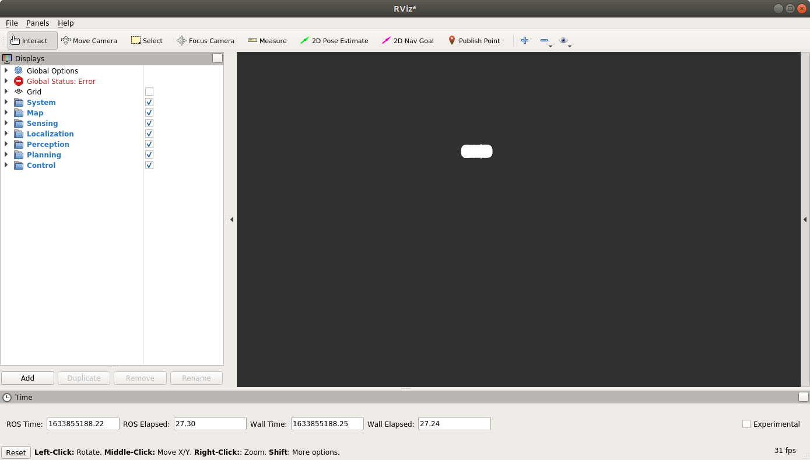
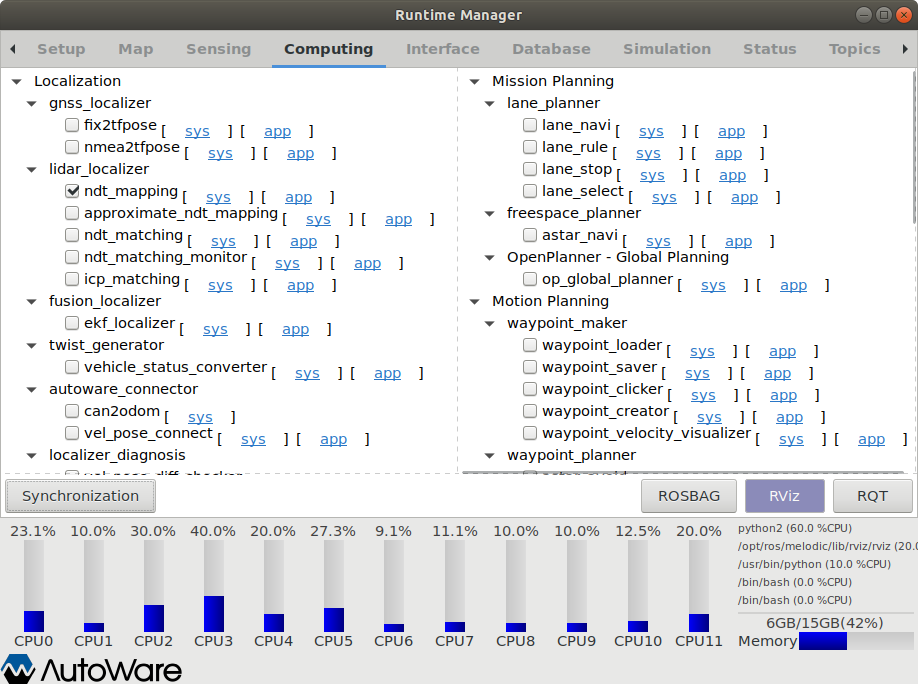
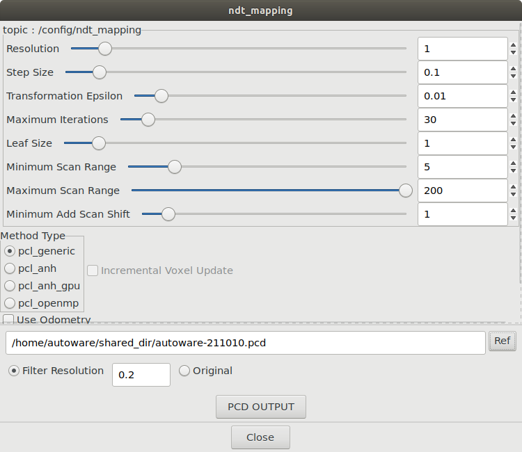
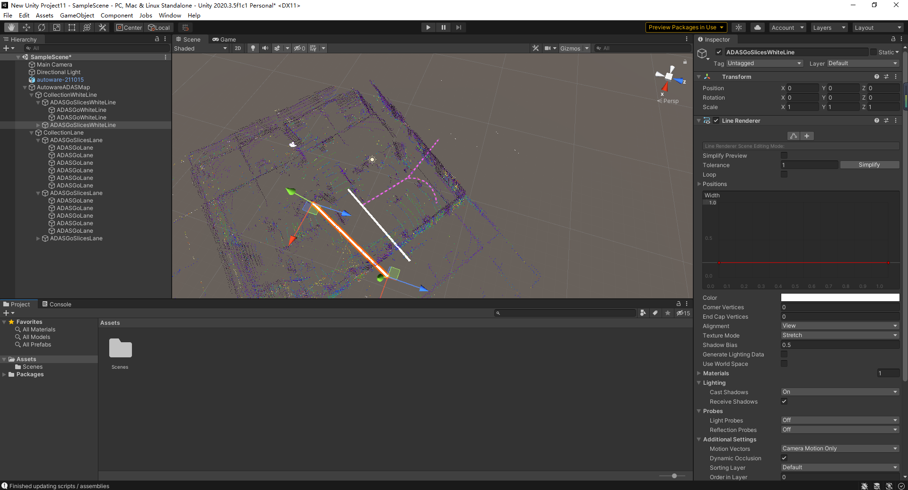
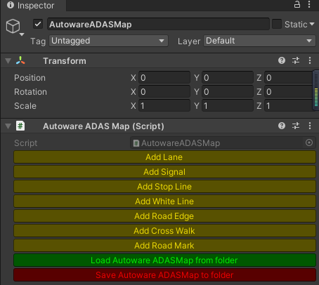
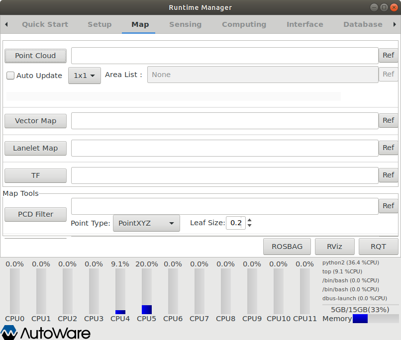

SLAM地图编辑
建图

选择
sensing和rvizfile->open config，选择.rviz目录下的ndt-mapping.rviz文件 
computing->lidar_localizer/ndt_mapping,录制地图
录制完毕，点击
app,选择pcd文件路径，点击PCD OUTPUT，CLOSE
编辑地图
在windows系统中，浏览器打开Unity官网下载2020.3.5版本（先注册账号），选择
从Hub下载。
Github下载Map Toolbox，注意选择
vector_map分支，目录不要有英文选择
安装，等待安装完毕。项目->新建，在新打开的项目窗口中选择Window->Package Manager，导入下载的Map Toolbox中的package.json文件，等待加载完毕。将录制的pcd文件拖到
Assets->Scenes文件夹中，在Hierarchy右键选择Autoware->AutowareADASMap
添加白线和车道，编辑完成后点击
Save AutowareADASMap to folder选项导出地图，传到小车主机中。
在
Autoware->Map界面中，分别加载Point Cloud和Vector Map，点击tf和RViz可以查看地图。